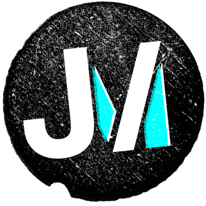
Traders and Analysts across Cargill’s Canada and Mexico operations were working across multiple third-party tools with no standardisation between them. Reports didn’t match from one system to the next. Errors crept in. Costs were high for what the tools actually delivered, and trust in the data was low.
This wasn’t a case of one bad tool. It was several tools, each solving part of the problem, none of them talking to each other.
The platform needed to give traders and analysts real-time data access, without losing the speed or flexibility they already had. Not a stripped-down replacement. Something that could stand in for everything the old tools did, and do it better.
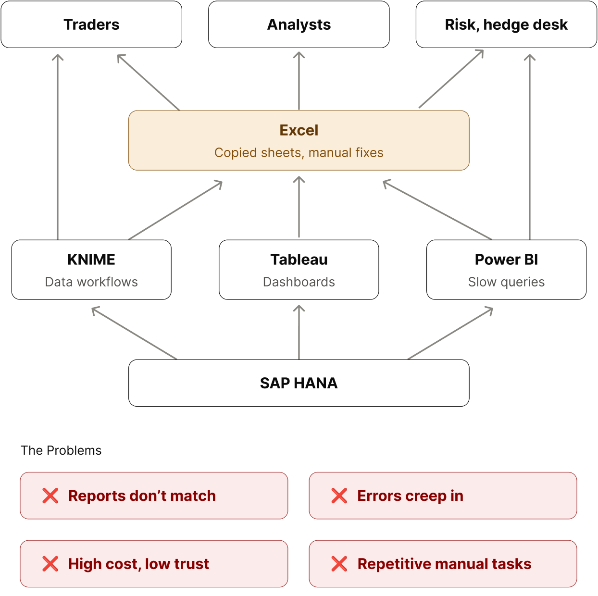
I ran research to understand who was actually using these tools day to day: traders, the hedge desk, market risk, merchants. Each group had a different relationship with the same data, so I mapped their existing workflows in detail before designing anything new.
That mapping mattered more than it might sound. The real risk wasn’t building the wrong features. It was building a platform that didn’t carry over what people already relied on. If it didn’t, they’d fall back to the old tools and nothing would have changed.
So the brief wasn’t just “build one platform.” It was:
build one platform familiar enough to adopt, while still being simpler than what it replaced.From there: reviewed the mapped flows with stakeholders and users, designed new flows, wireframed, then prototyped.
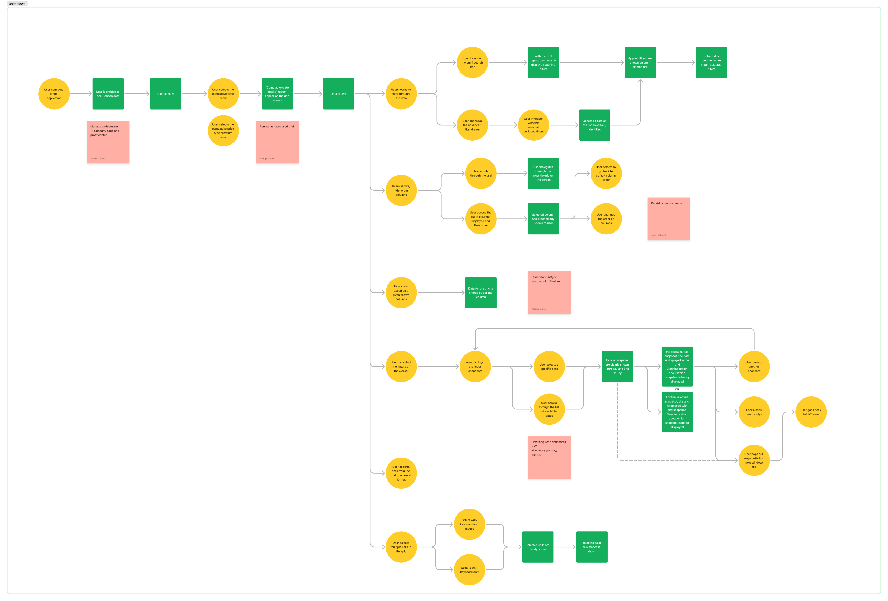
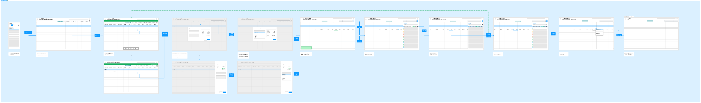
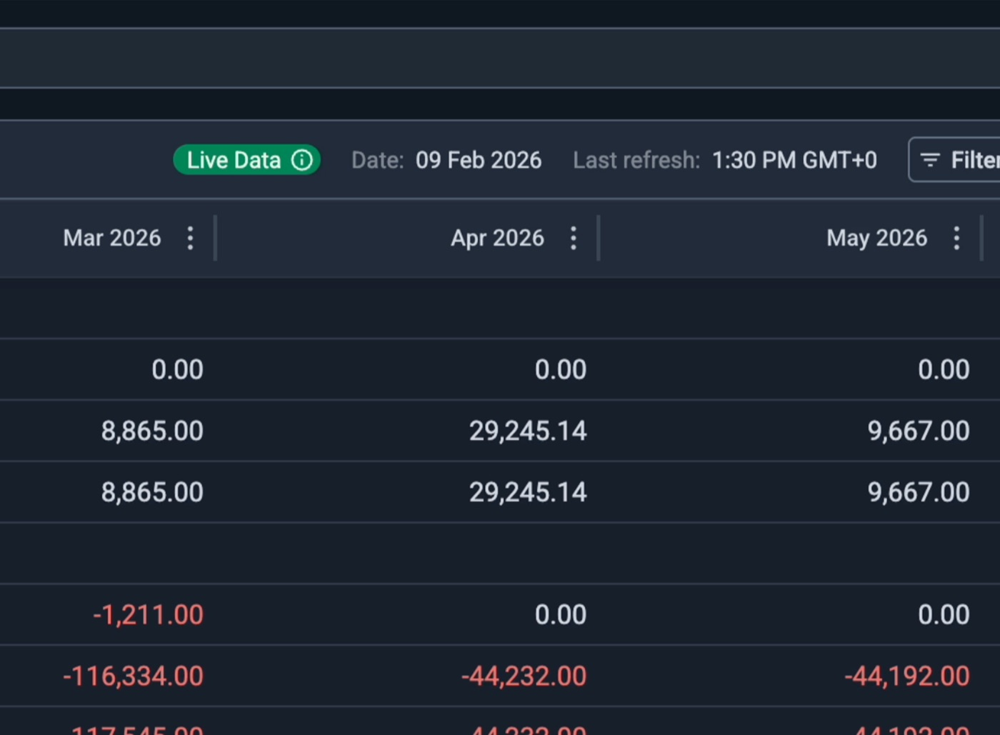
Real-time data access, streaming live and snapshot data so users always see current information
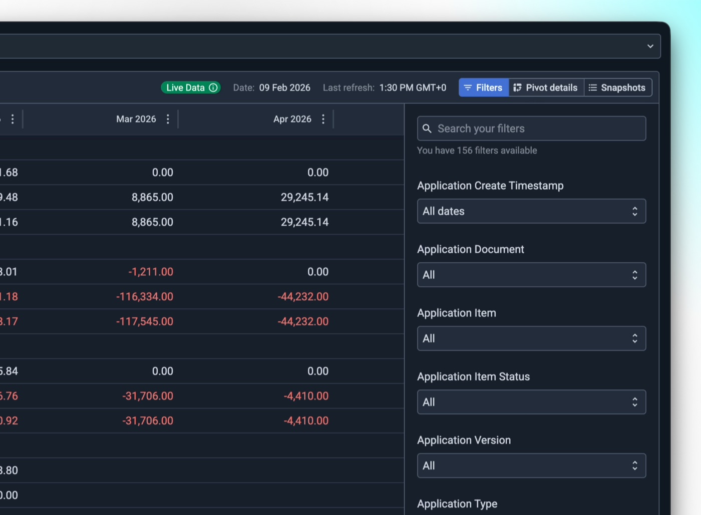
Interactive, customisable reporting with filtering, sorting, and views tailored to individual users and teams
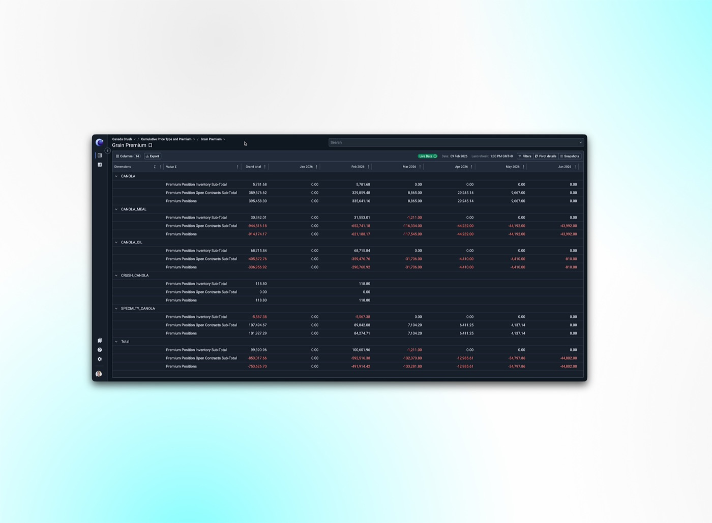
Support for large, complex financial datasets without a hit to performance
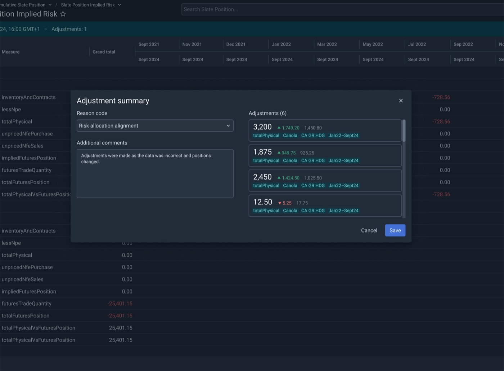
Direct edits and bulk uploads – Allowing users to correct and completing data governance at scale
The platform was named after Alpha Centauri, the closest star system to our own. It isn’t one star but three: two Sun-like stars, A and B, and Proxima Centauri, a faint red dwarf orbiting the pair.
The logo is those three stars, one large, one medium and one small, layered into a single mark. Together they also form an abstract “C” for Centauri.
The animation tells the same story. The stars start as one, separate, orbit, then come back together: three independent parts that only make sense as one, which is also what the platform did for the tools it replaced.
Shipping Centauri wasn’t the finish line. Once it was live, I ran a second round of research to see how people actually used it, not how we’d assumed they would.
I combined behavioural data from Datadog (session replays, heatmaps, export and error tracking) with focus groups, one-to-one interviews and day-in-the-life sessions.
The headline finding was uncomfortable but useful. People trusted the data, but they were still finishing their analysis in Excel. The heatmaps made it plain: clicks clustered on Snapshots and Export.
I ranked every finding by severity, and three changes shipped as a direct result: bulk adjustments, clear refresh status, and a rework of Saved Views.
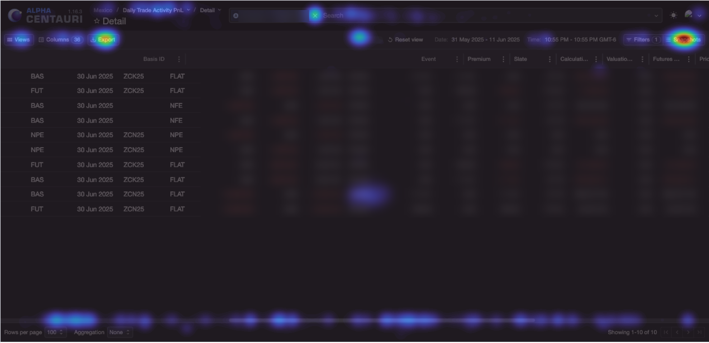
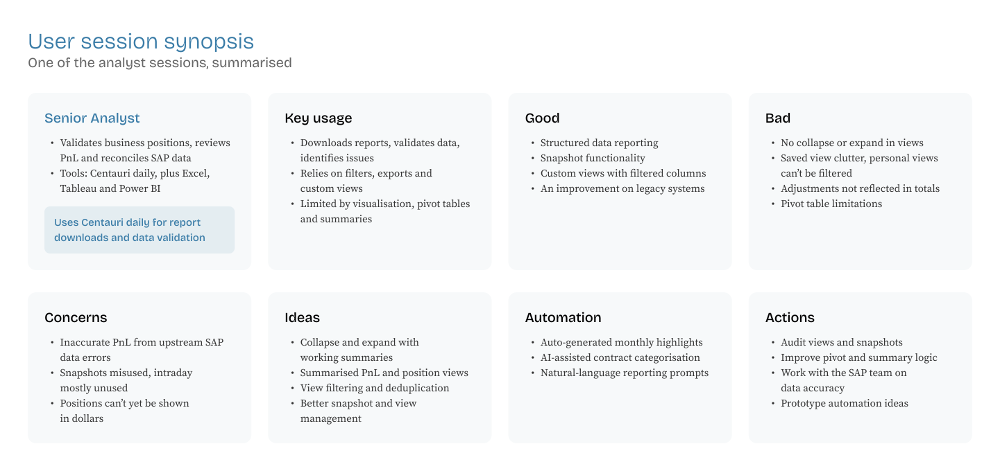
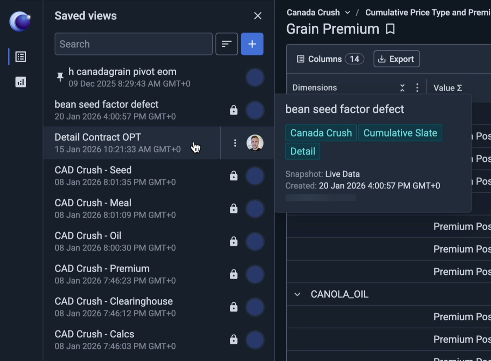
Saved Views was one of the clearest problems the research surfaced. Analysts were building views for their teams, but there was no way to protect them. Anyone could change a shared view by accident, so people fell back on old habits: duplicating spreadsheets and protecting tabs to keep a trusted version safe.
The list itself had become a problem too. Every analyst’s personal views sat alongside the shared ones, with no way to filter them, so finding the right view meant scrolling and guessing.
I reworked Saved Views around both issues. A senior analyst can now lock a master view, so everyone else can use it without being able to change it. The views people rely on most can be pinned to the top, and search, sorting and a quick hover preview make the right one easy to find.
The result: one trusted version of each view, maintained by the people responsible for it, instead of copies scattered across spreadsheets.
Centauri went live for Canada and Mexico in six months, and passed 20,000 page and report views. It partially replaced the third-party tools, saving roughly $1,000 per user per year, and gave traders and analysts one place to work from instead of several.
The post-launch work mattered just as much. Bulk adjustments, refresh status and Saved Views all shipped from the research, and analysts’ informal feedback after launch was positive.
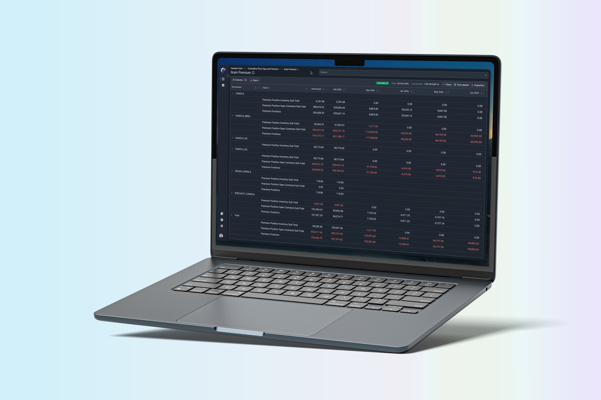